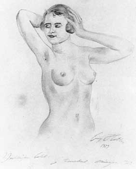

| Русский язык | Болгарский язык | Немецкий язык |
| Адольф Гитлер | Адолф Хитлер | Adolf Hitler |
| Арабский язык | Японский язык | Иврит |
| أدولف هتلر | アドルフ・ヒトラー | אדולף היטלר. |
Юность

Когда 13-летний Адольф учился во втором классе реальной школы в Линце, 3 января 1903 года неожиданно умер отец. Несмотря на беспрерывные споры и натянутые отношения, Адольф всё-таки любил отца и у гроба безудержно рыдал. По просьбе матери он продолжил ходить в школу, но окончательно для себя решил, что будет художником, а не чиновником, как хотел отец. Весной 1903 года он переехал в школьное общежитие в Линц. Уроки в школе стал посещать нерегулярно. 14 сентября 1903 года Ангела вышла замуж, и теперь в доме с матерью остались только Адольф, его сестра Паула и сестра матери Иоганна Пёльцль. Когда Адольфу исполнилось 15 лет, и он заканчивал третий класс реальной школы, 22 мая 1904 года в Линце состоялась его конфирмация. В этот период он сочинял пьесу, писал стихи и новеллы, а также сочинил либретто для оперы Вагнера по легенде Виланда и увертюру. В школу он ходил по-прежнему с отвращением, и ему больше всего не нравился французский язык. Осенью 1904 года он со второго раза сдал экзамен по этому предмету, но с него взяли обещание, что в четвёртый класс он пойдёт в другую школу. Гемер, который в это время преподавал Адольфу французский язык и другие предметы, на процессе над Гитлером в 1924 году сказал: «Гитлер был несомненно одарённым, хотя и односторонне. Почти не умел владеть собой, был упрямым, самовольным, своенравным и вспыльчивым. Не был прилежным». По многочисленным свидетельствам можно сделать вывод, что уже в молодости Гитлер обнаруживал ярко выраженные психопатические черты. В сентябре 1904 года Гитлер, выполняя данное обещание, поступил в государственную реальную школу в Штейре в четвёртый класс и учился в ней до сентября 1905 года. В Штейре он жил в доме купца Игнаца Каммергофера на Грюнмаркет, 19. Впоследствии это место было переименовано в «Адольф Гитлерплац». 11 февраля 1905 года Адольф получил свидетельство об окончании четвёртого класса реальной школы. Оценка «отлично» там стояла только по рисованию и физкультуре; по немецкому, французскому, математике, стенографии — неудовлетворительно; по остальным предметам — удовлетворительно. 21 июня 1905 года мать продала дом в Леондинге и переехала с детьми в Линц на улицу Гумбольта, 31. Осенью 1905 года Гитлер по просьбе матери с большой неохотой начал снова посещать школу в Штейре и сдавать повторно экзамены, чтобы получить свидетельство за четвёртый класс. В это время у него обнаружили тяжёлое заболевание лёгких — врач посоветовал матери отложить его обучение в школе хотя бы на год и порекомендовал в будущем никогда не работать в конторе. Мать забрала Адольфа из школы и отвезла в Шпиталь к родственникам. 18 января 1907 года матери сделали сложную операцию (рак молочной железы). В сентябре, когда здоровье матери улучшилось, 18-летний Гитлер поехал в Вену, чтобы сдать вступительный экзамен в общую художественную школу, однако не прошёл второй тур экзаменов. После экзаменов Гитлер сумел добиться встречи с ректором, от которого получил совет заняться архитектурой: рисунки Гитлера свидетельствовали о его способностях к этому искусству. В ноябре 1907 года Гитлер вернулся в Линц и взял на себя уход за безнадёжно больной матерью. 21 декабря 1907 года Клара Гитлер умерла, 23 декабря Адольф похоронил её рядом с отцом. В феврале 1908 года после урегулирования дел, связанных с наследством и оформления пенсий себе и сестре Пауле как сиротам, Гитлер уехал в Вену. Друг юности Кубицек и другие сотоварищи Гитлера свидетельствуют, что он постоянно бывал на ножах со всеми и испытывал ненависть ко всему, что его окружало. Поэтому его биограф Иоахим Фест допускает, что антисемитизм Гитлера явился сфокусированной формой ненависти, бушевавшей до того впотьмах и нашедшей, наконец, свой объект в еврее. В сентябре 1908 года Гитлер сделал повторную попытку поступить в Венскую художественную академию, но провалился уже в первом туре. После провала Гитлер несколько раз менял место жительства, не сообщая никому новых адресов. Уклонялся от службы в австрийской армии. Он не хотел служить в одной армии с чехами и евреями, воевать «за габсбургское государство», но в то же время был готов умереть за германский рейх. Устроился на работу как «академический художник», а с 1909 года и как писатель. В 1909 году Гитлер познакомился с Рейнгольдом Ганишем (нем. Reinhold Hanisch), который начал успешно продавать его картины. До середины 1910 года Гитлер рисовал в Вене очень много картин малого формата. В основном это были копии с почтовых открыток и старых гравюр, изображающие всевозможные исторические здания Вены. Помимо этого он рисовал всевозможные рекламные объявления. В августе 1910 года Гитлер заявил в полицейский комиссариат Вены, что Ганиш утаил от него часть выручки и украл одну картину. Ганиша на семь дней отправили в тюрьму. С этого времени Гитлер сам продавал свои картины. Работа приносила ему такой большой доход, что в мае 1911 года он отказался от положенной ему как сироте ежемесячной пенсии в пользу сестры Паулы. Кроме этого, в этом же году он получил большую часть наследства своей тётки Иоганны Пёльцль. В этот период Гитлер начал усиленно заниматься самообразованием. Впоследствии он свободно мог общаться и читать литературу и газеты в оригинале по-французски и по-английски. Во время войны любил смотреть французские и английские фильмы без перевода. Очень хорошо разбирался в вооружении армий мира, истории и т. д. В это же время у него проявился интерес к политике. В мае 1913 года Гитлер в возрасте 24 лет переехал из Вены в Мюнхен и поселился на квартире портного и владельца магазина Йозефа Поппа на улице Шляйсхаймер (Schleißheimer Straße). Здесь он жил до начала Первой мировой войны, работая художником. 29 декабря 1913 года австрийская полиция попросила мюнхенскую установить адрес скрывающегося Гитлера. 19 января 1914 года мюнхенская уголовная полиция доставила Гитлера в австрийское консульство. 5 февраля 1914 года Гитлер поехал в Зальцбург на освидетельствование, где его признали непригодным к службе в армии.

Участие в Первой мировой войне
1 августа 1914 года началась Первая мировая война. Гитлера обрадовало известие о войне. Он немедленно подал заявление на имя короля Баварии Людвига III, чтобы получить разрешение служить в Баварской армии. Уже на следующий день ему предложили явиться в любой баварский полк. Он выбрал 16-й резервный Баварский полк («полк Листа», по фамилии командира).
16 августа он был зачислен в 6-й резервный батальон 2-го баварского пехотного полка № 16 (Königlich Bayerisches 16. Reserve-Infanterie-Regiment), состоящего из добровольцев. 1 сентября переведён в 1-ю роту Баварского резервного пехотного полка № 16. 8 октября присягнул на верность королю Баварии Людвигу III и императору Францу Иосифу. В октябре 1914 года был отправлен на Западный фронт и 29 октября участвовал в битве на Изере, а с 30 октября по 24 ноября — под Ипром. 1 ноября 1914 года присвоено звание ефрейтора. 9 ноября переведён связным в штаб полка. С 25 ноября по 13 декабря участвовал в позиционной войне во Фландрии. 2 декабря 1914 года награждён Железным крестом 2-го класса. С 14 по 24 декабря участвовал в битве во Французской Фландрии, а с 25 декабря 1914 по 9 марта 1915 года — в позиционных боях во Французской Фландрии. Гитлер среди сослуживцев (сидит справа), 1914 год В 1915 году участвовал в битвах под Нав-Шапелем, под Ла Бассе и Аррасом. В 1916 году участвовал в разведывательных и демонстрационных боях 6-й армии в связи с битвой на Сомме, а также в сражении под Фромелем и непосредственно в битве на Сомме. В апреле 1916 года знакомится с Шарлотт Лобжуа. Ранен в левое бедро осколком гранаты под Ле Баргюр в первой битве на Сомме. Попал в лазарет Красного Креста в Белице под Потсдамом. По выходу из госпиталя (март 1917 года) вернулся в полк во 2-ю роту 1-го резервного батальона. В 1917 году — весенняя битва под Аррасом. Участвовал в боях в Артуа, Фландрии, в Верхнем Эльзасе. 17 сентября 1917 года награждён крестом «За военные заслуги» 3-го класса с мечами. В 1918 году участвовал в весеннем наступлении во Франции, в боях под Эврё и Мондидье. 9 мая 1918 года награждён полковым дипломом за выдающуюся храбрость под Фонтане. 18 мая получает нагрудный знак «За ранение» (чёрный). С 27 мая по 13 июня — бои под Суассоном и Реймсом. С 14 июня по 14 июля — позиционные бои между Уазой, Марной и Эной. В период с 15 по 17 июля — участие в наступательных боях на Марне и в Шампани, а с 18 по 29 июля — участие в оборонительных боях на Суасонне, Реймсе и Марне. Награждён Железным крестом 1-го класса за доставку на артиллерийские позиции донесения в особо тяжёлых условиях, чем спас немецкую пехоту от обстрела собственной артиллерией. 21—23 августа 1918 года — участие в битве под Монси-Бапом. 25 августа 1918 года Гитлер получил награду за службу III степени. По многочисленным свидетельствам, он был осмотрительным, очень смелым и отличным солдатом. Сослуживец Гитлера по 16-му Баварскому пехотному полку, Адольф Мейер, приводит в своих мемуарах свидетельство другого их сослуживца, Михаэля Шлеехубера, который характеризовал Гитлера как «хорошего солдата и безупречного товарища». По словам Шлеехубера, он «ни разу не видел», чтобы Гитлер «каким-либо образом испытывал дискомфорт от службы или уклонялся от опасности», равно как не слышал о нём за время его нахождения в дивизии «ничего отрицательного». 15 октября 1918 года — отравление газом под Ла Монтень в результате взрыва рядом с ним химического снаряда. Поражение глаз — с этим временная потеря зрения. Лечение в баварском полевом лазарете в Уденарде, затем в психиатрическом отделении прусского тылового лазарета в Пазевальке. Находясь на излечении в госпитале, узнал о капитуляции Германии и свержении кайзера, что стало для него большим потрясением